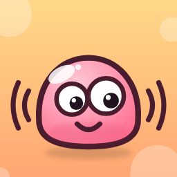

Wibblewall
Live wallpapers that wobble — in the app and on your home screen.
Pick a wallpaper and give it a wobble. Tilt the phone and cheeks, bellies and googly eyes slosh about; shake it and everything jiggles; grab a soft bit with your finger and flick it. The wobble is real physics, and more wallpapers are on the way.
What it does
- Tilt, shake, poke Every soft part is a chain of sixteen bodies, simulated as you move the phone, so no two wobbles are the same.
- A live wallpaper Set any of them as your wallpaper right from its screen. It keeps wobbling on your home screen whenever you tilt the phone, and rests when you don't.
- A home-screen widget Your current wallpaper, with arrows to switch to another, a heart, and a way into Settings. Shown or hidden from the app's menu.
- Favourites Give a wallpaper a heart and it comes first. Your current wallpaper is always at the top.
- Your way Light or dark, in five languages, or just as your phone is set.
What stays on your device
Everything you choose. Wibblewall remembers only which wallpaper is set, your favourites and your settings, on your phone, and its own code sends nothing anywhere. There is no account, no analytics of ours and no server of ours. The app is free, paid for by one ad banner at the bottom of the list of wallpapers; the ad network uses your advertising ID only if you allow it, and you are asked before the first ad.
Languages
English, Deutsch, Français, Italiano, Русский.